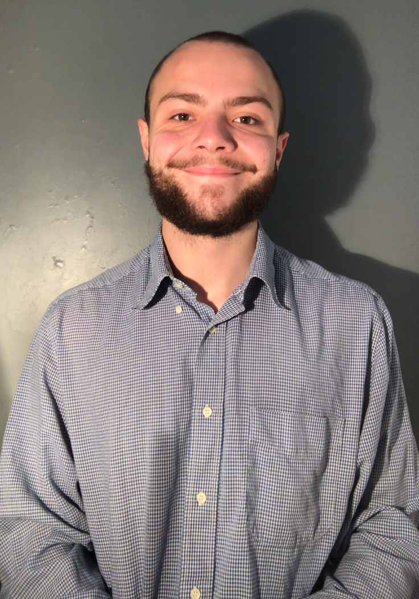

ACCUEIL
ACCUEIL
À PROPOS
Je m'appelle Raphael Chantreux,
je suis originaire du 92 et j'ai 19 ans.
Je suis titulaire d'un bac S avec mention assez bien
(obtenu au lycée Jean Rostand à Mantes La Jolie,
78840, année scolaire 2019-2020).

cliquez ici pour visionner
mon cv
Je suis actuellement en deuxième année de
DUT en métiers du multimédia et de l'Internet.
J'ai débuté la formation en 2019.